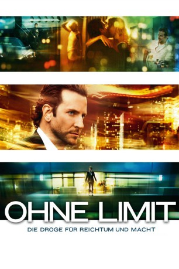

gesehen am 05.09.2015
gesehen am 05.09.2015Alternativ: Limitless gesehen am 05.09.2015
 
 IMDB-Wertung: 7.4 / 10
IMDB-Wertung: 7.4 / 10  Metascore:
Metascore: 
Eddie Morra ist am Boden. Dank chronischer Lustlosigkeit und Schreibblockade bleiben Erfolge als Autor so illusionär wie die als Mann, denn nach der Hoffnung hat ihn auch seine geduldige Freundin Lindy verlassen. Als ihm der Zufall jedoch die geheim entwickelte Designerdroge NZT in die Hände spielt, steigt der Verlierer kometenhaft zum Gewinner auf. Grenzen scheint es für Eddies Genialität nun nicht mehr zu geben - bis auf jene, die ihm die Nebenwirkungen der Droge und andere, sehr gefährliche Konsumenten setzen.
Jahr: 2011
Dauer: 105 Minuten
FSK: 16
Land: USA Studio: Relativity MediaTonspuren: DTS - ,
Untertitel:
Auflösung: 720p (1280x528) Größe: 3758 MB
Genre: Mystery, Sci-Fi, Thriller
Regisseur: Neil Burger
Drehbuch: Leslie Dixon, Alan Glynn
Soundtrack: Paul Leonard-Morgan
Darsteller:
 Bradley Cooper als Eddie Morra
Bradley Cooper als Eddie Morra Robert De Niro als Carl Van Loon
Robert De Niro als Carl Van Loon Abbie Cornish als Lindy
Abbie Cornish als Lindy Andrew Howard als Gennady
Andrew Howard als Gennady Anna Friel als Melissa
Anna Friel als Melissa Johnny Whitworth als Vernon
Johnny Whitworth als Vernon Tomas Arana als Man in Tan Coat
Tomas Arana als Man in Tan Coat Robert John Burke als Pierce
Robert John Burke als Pierce Darren Goldstein als Kevin Doyle
Darren Goldstein als Kevin Doyle Ned Eisenberg als Morris Brandt
Ned Eisenberg als Morris Brandt Richard Bekins als Hank Atwood
Richard Bekins als Hank Atwood Patricia Kalember als Mrs. Atwood
Patricia Kalember als Mrs. Atwood Brian Anthony Wilson als Detective
Brian Anthony Wilson als Detective Rebecca Dayan als Rebecca Dayan
Rebecca Dayan als Rebecca Dayan Robert Bizik als Coffee Shop Owner
Robert Bizik als Coffee Shop Owner Eddie J. Fernandez als Gennady Thug
Eddie J. Fernandez als Gennady Thug Erica Lynne Arden als Restaurant Patron , uncredited
Erica Lynne Arden als Restaurant Patron , uncredited Joel Brody als Carter , uncredited
Joel Brody als Carter , uncredited Jennifer Butler als Business Woman , uncredited
Jennifer Butler als Business Woman , uncredited Robert Eckard als Barfly , uncredited
Robert Eckard als Barfly , uncredited Joel Marsh Garland als Man 1 , uncredited
Joel Marsh Garland als Man 1 , uncredited Andrea Havens als Party Guest , uncredited
Andrea Havens als Party Guest , uncredited Basil Kershner als Bar Patron , uncredited
Basil Kershner als Bar Patron , uncredited Steven J. Klaszky als Restaurant Patron , uncredited
Steven J. Klaszky als Restaurant Patron , uncredited Michael J. Kraycik als Bartender , uncredited
Michael J. Kraycik als Bartender , uncredited Bruce Lee als Karate Fighter on T.V. , archive footage, uncredited
Bruce Lee als Karate Fighter on T.V. , archive footage, uncreditedDatei: X:\2011(N-Z)\Ohne Limit (2011, FSK16, 1280x528).mkv seit 10.04.2015
Festplatte: HD 2011(G-Z)
 Es gibt insgesamt 132 Filme in der Gruppe '2011(N-Z)'
Es gibt insgesamt 132 Filme in der Gruppe '2011(N-Z)'